deepseek/deepseek-v4-flash-0731 via OpenRouter, pinned to
relace. Randomization seed:
260920. Analysis mode:
advanced. Report theme:
dark.
Primary efficiency bars are means across task-level means, not pooled agent calls. Unresolved tasks remain in token, cost, and time averages when the agent run itself is usable. Error bars are two-sided 95% Student-t confidence intervals across the selected SWE-bench tasks. Current task count: 5.
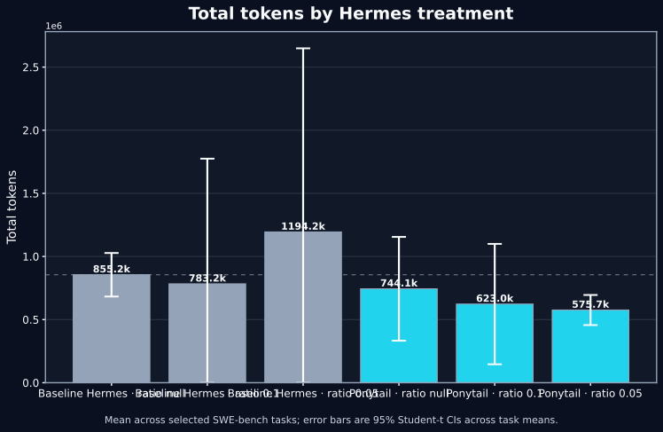
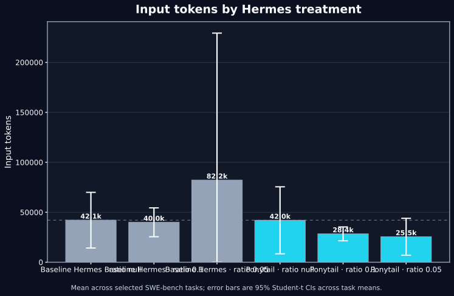
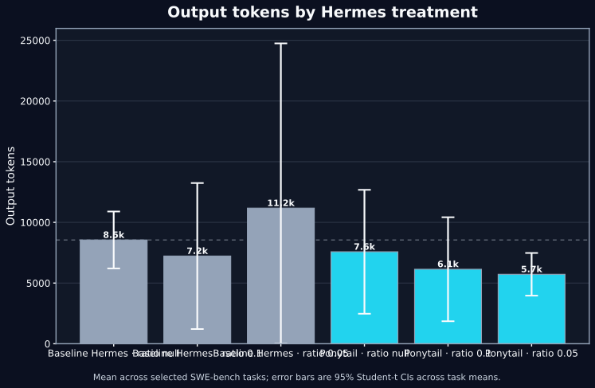
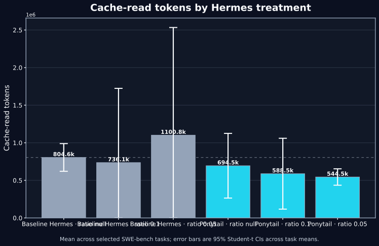
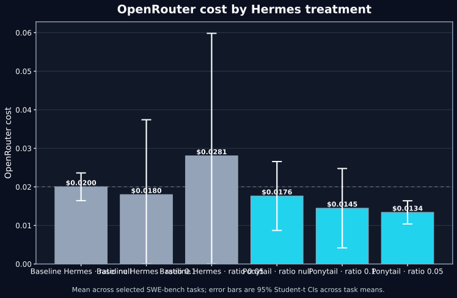
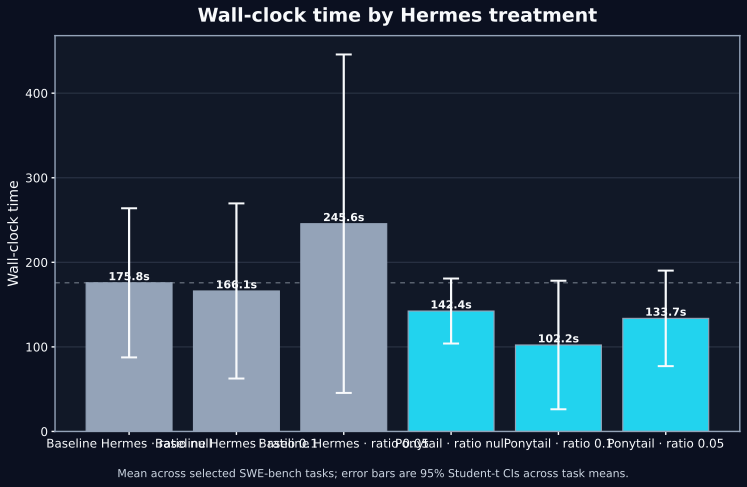
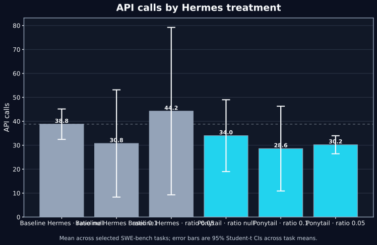
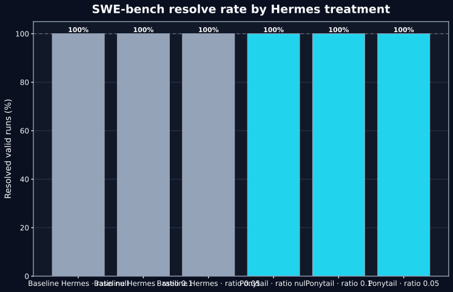
Exploratory task-level analyses include direct API/tool/orchestration time budgets when native Hermes trace events are available, cost/time tradeoffs, token throughput, time and tokens per API call, tool-call intensity when available, paired baseline-normalized effects, task-fixed-effect regressions, Caveman×Ponytail factorial regression when available, PCA, deterministic clustering, and correlations. Legacy runs do not contain exact API-wait or tool-execution durations, so ratio diagnostics use the saved wall time and call counts.
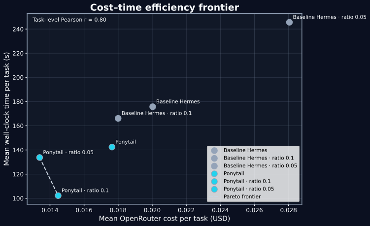
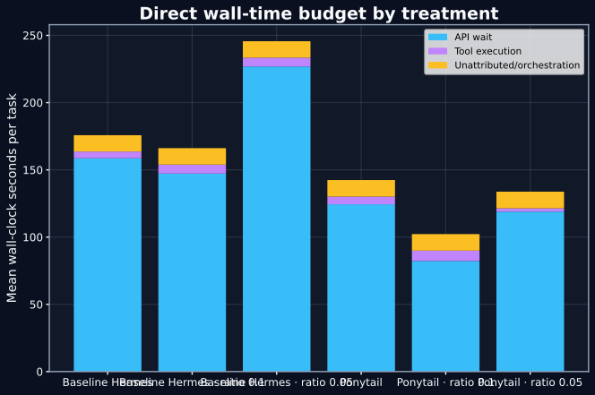
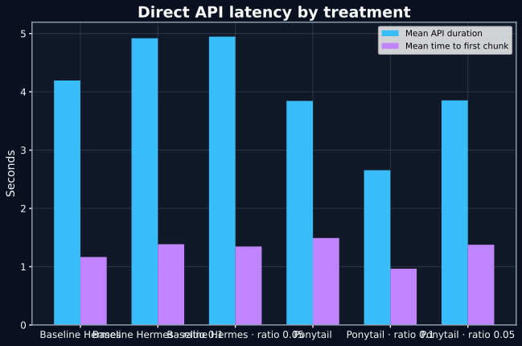
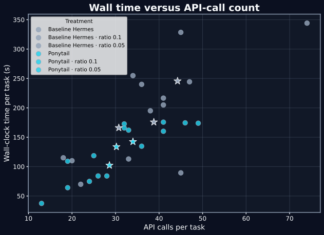
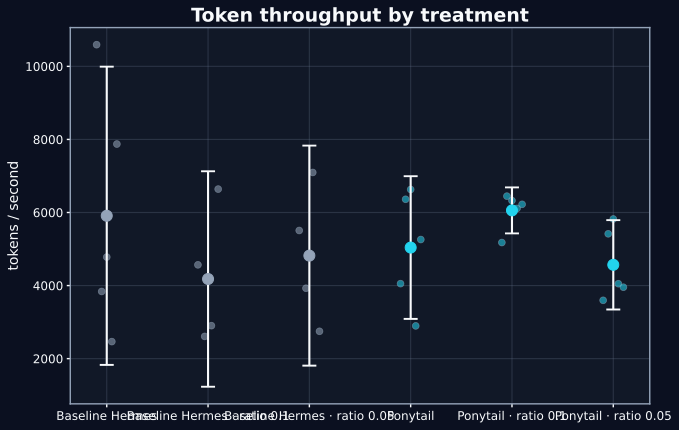
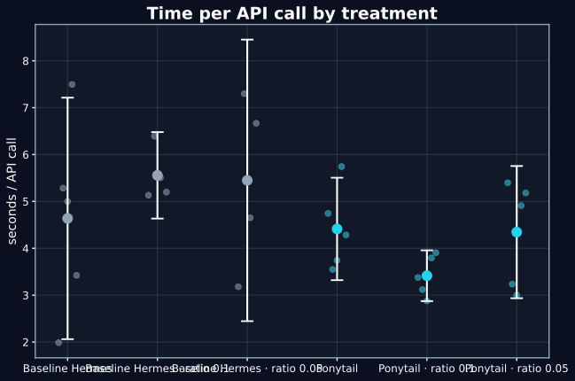
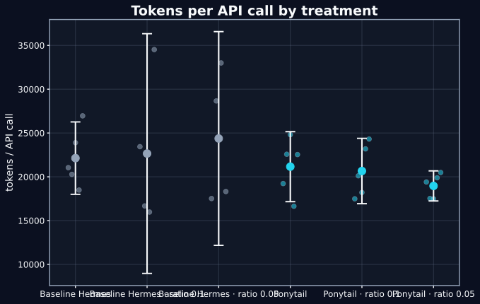
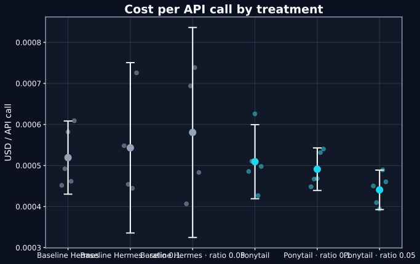
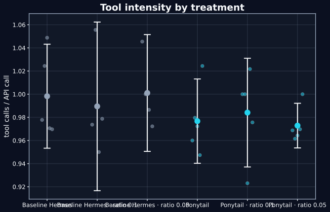
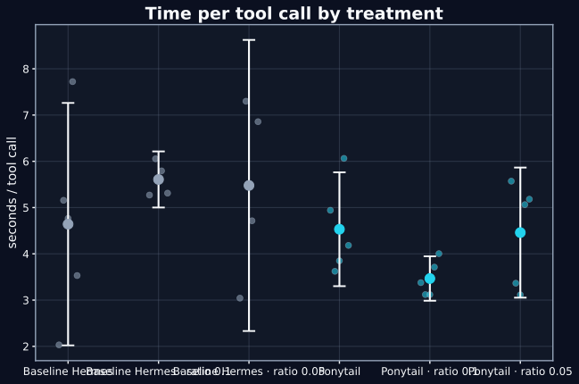
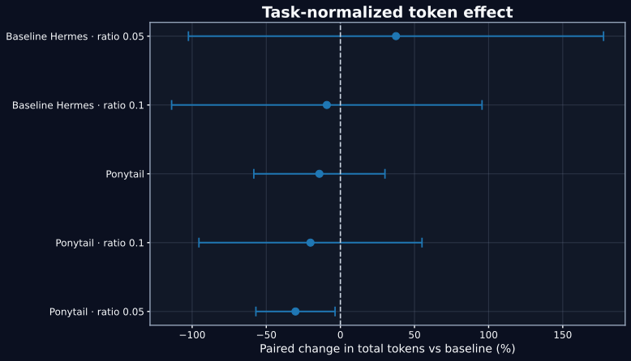
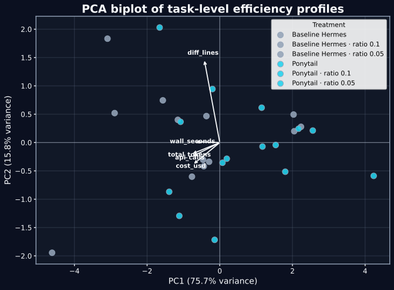
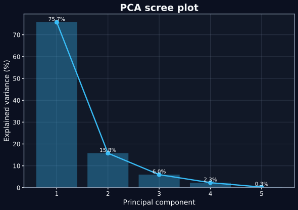
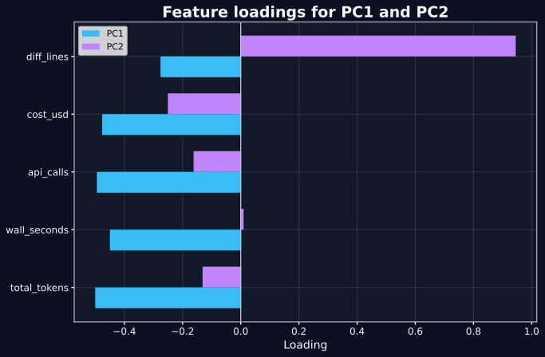
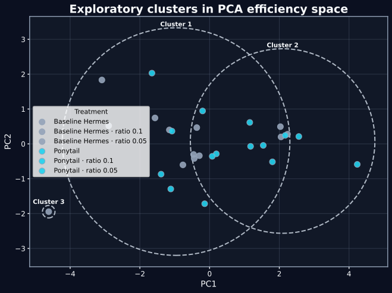
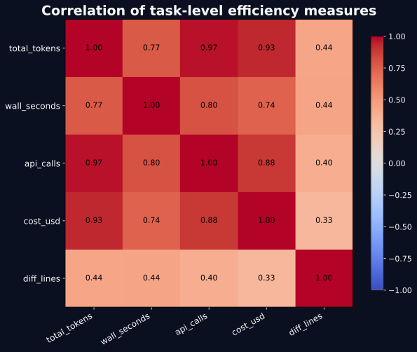
| Treatment | Valid tasks | Total tokens (95% CI) | Cost (95% CI) | Time (95% CI) | Resolved runs | Usable runs |
|---|---|---|---|---|---|---|
| Baseline Hermes · ratio null | 5/5 | 855.2k [682.9k, 1027.6k] | $0.0200 [$0.0164, $0.0236] | 175.8s [87.6s, 263.9s] | 100% | 100% |
| Baseline Hermes · ratio 0.1 | 4/5 | 783.2k [0, 1774.6k] | $0.0180 [$0.0000, $0.0374] | 166.1s [62.6s, 269.7s] | 100% | 80% |
| Baseline Hermes · ratio 0.05 | 4/5 | 1194.2k [0, 2648.5k] | $0.0281 [$0.0000, $0.0598] | 245.6s [45.5s, 445.8s] | 100% | 80% |
| Ponytail · ratio null | 5/5 | 744.1k [333.1k, 1155.1k] | $0.0176 [$0.0087, $0.0266] | 142.4s [104.0s, 180.8s] | 100% | 100% |
| Ponytail · ratio 0.1 | 5/5 | 623.0k [146.2k, 1099.8k] | $0.0145 [$0.0042, $0.0248] | 102.2s [26.2s, 178.2s] | 100% | 100% |
| Ponytail · ratio 0.05 | 5/5 | 575.7k [456.6k, 694.8k] | $0.0134 [$0.0104, $0.0164] | 133.7s [77.3s, 190.2s] | 100% | 100% |
This is a regenerated analysis. Original per-run evidence remains in /home/larry/code/forge-bench/benchmark-results/deepseek-v4-v41-ponytail-warnings-. This folder contains a snapshot of the run records plus regenerated summaries, figures, and report.
Advanced mode also writes analysis tables prefixed with advanced_.